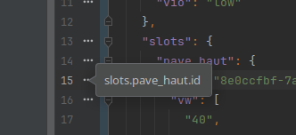

Quick Documentation
Use Ctrl+Q or hover to view a key’s complete dot-notation path and optional value type.
Configuration paths, made visible
See the complete path of any configuration key while you work. Available for IntelliJ IDEA and Visual Studio Code.
Inspect nested configuration without manually tracing objects, arrays, mappings or XML tags. The path stays close to the key you are editing.

Use Ctrl+Q or hover to view a key’s complete dot-notation path and optional value type.
Hover or click a marker to reveal the path for a key directly from the editor margin.
Long minified lines collapse into one marker with an explicit Reformat Code action.
Nested objects, arrays, repeated XML siblings and keys containing literal dots are resolved into unambiguous paths.
Choose your editor, install the extension, then open a JSON, YAML or XML configuration file.